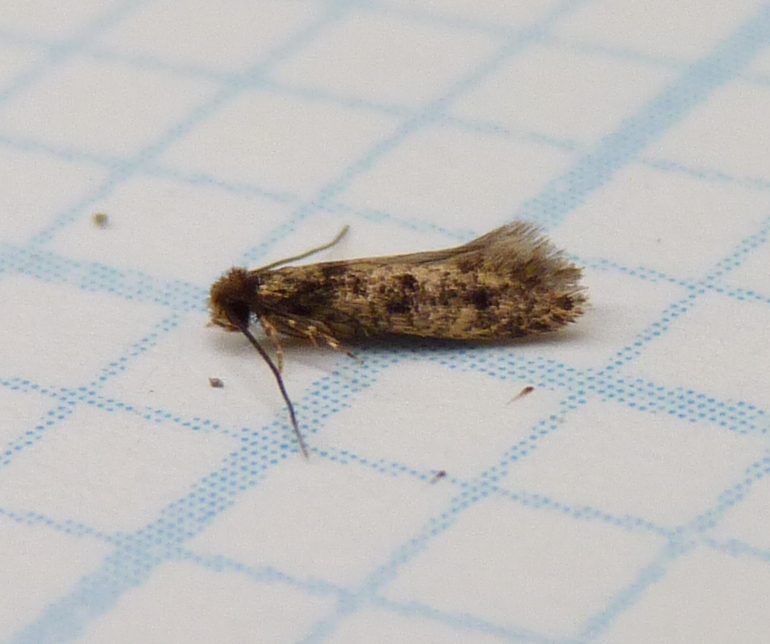

हाउसहोल्ड केसबेयरर पतंगाHousehold Casebearer
Phereoeca uterella · Tineidae · INS-0172

- Scientific name वैज्ञानिक नाम
- Phereoeca uterella (Stoll, 1891)
- Family कुल
- Tineidae
- Hindi हिंदी
- हाउसहोल्ड केसबेयरर पतंगा
- Local names स्थानीय नाम
- household casebearer, casebearer
- Status here यहाँ की स्थिति
- native
- Movement आवागमन
- Resident, here all year
- Known from कहाँ दर्ज
- Others have published records from the wider Awadh–Purvanchal plain, none yet from Basti–Ayodhya अवध–पूर्वांचल से दूसरों के प्रकाशित अभिलेख, बस्ती–अयोध्या से अभी नहीं
- IUCN IUCN
- not evaluated
- Review समीक्षा
- audited and independently read
When to look कब देखें
Present all year. साल भर मौजूद।
हाउसहोल्ड केसबेयरर पतंगा / Household Casebearer
Phereoeca uterella (Stoll, 1891) — Tineidae
हाउसहोल्ड केसबेयरर पतंगा — छोटी-सी भूरी पतंगा जो घरों में, सीलन वाली जगह पर दिखती है। इसका लार्वा अपने चारों ओर एक छोटी ट्यूब या थैली बनाता है, जिसमें वह सुरक्षित रहता है। घरों की खाद, मकड़ी के जाले और सूखे पत्ते खाता है। दुनिया भर में घरों में पाई जाती है।
Quick Identification त्वरित पहचान
| Feature | Description |
|---|---|
| Size | Larva 3–5 mm; adult wingspan 7–11 mm |
| Larval case | Silk tube with attached debris, 4–7 mm long |
| Adult colour | Mottled grey or brownish-grey |
| Adult wings | Narrow, scaled; forewings marked with pale bands |
| Larval appearance | Whitish, found within its silken case |
| Habitat | Indoors, often in dust, corners, storage areas |
Field tip: Look in kitchens, pantries, and storage areas for small silk tubes (casings) with attached dust and debris on walls, corners, and window sills. The adults are small, inconspicuous grey moths. Often found where spider webs accumulate dust.
हिंदी — कैसे पहचानें: घर के कोने, खिड़की के पास, रसोई में छोटी-सी थैली दिखेगी, जिसमें धूल लगी हो। उसमें छोटा कीड़ा है।
Morphology आकारिकी
Biometrics:
| Measurement | Range |
|---|---|
| Larval body length | 3–5 mm |
| Case length | 4–7 mm |
| Adult wingspan | 7–11 mm |
| Adult body length | 2.5–4 mm |
Larva: Whitish, slender, with a brown head capsule and three pairs of thoracic legs. The larva constructs a portable silken case or tube, reinforced with fragments of its food material (dust, plant fibres, hair) and other debris. The case is roughly triangular or cylindrical, and the larva retreats into it when threatened.
Adult: Small, delicate moth with mottled grey or brownish-grey forewings bearing pale bands and streaks. Hindwings are narrow and pale. Antennae are filiform and relatively long. Legs are long and slender. The moth is inconspicuous and often overlooked.
Case structure: The silken case is spun by the larva and reinforced with particles from its environment. This construction offers protection and camouflage. As the larva grows, it modifies and enlarges the case. Different Tinea species produce cases of different shapes; Phereoeca cases are characteristically large and loosely attached to surfaces.
Behaviour & Ecology व्यवहार और पारिस्थितिकी
A synanthropic (human-associated) moth found indoors worldwide. The larvae are scavengers that feed on dried plant matter, animal fibres, dust, and detritus accumulating in buildings. They are particularly abundant in poorly cleaned kitchens, pantries, and storage areas, and in corners where dust accumulates. Adults are nocturnal and attracted to dim light. The moths mate indoors, and females lay small clusters of eggs in sheltered crevices. The species is associated with poor sanitation and accumulation of debris; buildings that are regularly cleaned have fewer infestations.
The larval case affords protection and camouflage; predators often pass by without noticing the small, debris-covered cases. The species has cosmopolitan distribution, likely spread via trade in dried goods and textiles.
हिंदी: कीचन और गोदाम में रहता है। सफ़ाई न हो तो ज़्यादा आता है। रात को पतंगा उड़ता है।
Life Cycle / Phenology जीवन चक्र
| Stage | Duration |
|---|---|
| Egg | 4–8 days |
| Larva (multiple instars) | 4–6 weeks |
| Pupa | 8–14 days |
| Adult lifespan | 1–2 weeks |
| Egg-to-adult | 8–12 weeks under warm, humid conditions |
Temperature dependence: Development is fastest at 22–26°C. At lower temperatures, development slows. The species does not enter dormancy indoors; multiple generations can occur per year under constant indoor conditions.
Reproduction: Females lay eggs in clusters in sheltered sites. Males may mate multiple times; females are attracted to males by pheromones.
Host Plants or Prey आहार
Food sources (all life stages):
- Dried plant material: leaves, stems, grains
- Stored foods: flour, dried fruit, cereals
- Animal fibres: feathers, hair, wool, fur
- Household dust: composed of skin cells, plant matter, and fibres
- Fungi and moulds: feeds on decomposing organic matter
Feeding: Larvae are the primary feeding stage; adults feed little or not at all. Larvae scrape and chew at dried materials, using their mandibles to break down tough fibres. The larval case provides a "home base" from which the larva extends to feed.
Predators / Natural Enemies शत्रु
- Spiders: Web-building spiders may trap adults; hunting spiders may attack larvae
- Parasitoid wasps: Small parasitoids attack eggs and pupae
- Predatory insects: Ants and other predators feed on exposed larvae
- Dust mites: May compete for food resources and potentially feed on eggs
Agricultural / Human Relevance कृषि प्रासंगिकता
Household pest. The Household Casebearer is a cosmopolitan pest of stored foods, dried goods, and fibres. In homes and warehouses, the larvae can damage flour, cereals, dried fruits, and other stored foods. They may also damage wool, feathers, and textiles in storage. The presence of larvae, their cases, and the adult moths are signs of poor sanitation and environmental conditions that favour dust and debris accumulation.
Management. Prevention relies on regular cleaning, removal of dust and debris, proper storage of foodstuffs in airtight containers, and reduction of indoor humidity. In severe infestations, insecticidal treatment of affected areas may be necessary. The species does not transmit disease but is an indicator of inadequate hygiene.
हिंदी: साफ़-सफ़ाई से नहीं आएगा। अनाज को ढके हुए डिब्बों में रखो। पतंगे को देखो तो घर में सफ़ाई की ज़रूरत है।
Expected Locally स्थानीय रूप से अपेक्षित
Not a field record. Written from published accounts for eastern Uttar Pradesh. No confirmed local sighting yet — if you have seen it, that is what the atlas needs.
अभी तक स्थानीय पुष्टि नहीं। यह विवरण प्रकाशित स्रोतों से है, किसी अवलोकन से नहीं।
Expected in kitchens, pantries, and storage areas throughout Basti district and eastern UP. The presence of the moth indicates poor cleaning or dust accumulation. A specimen collected from a building with date and location would confirm a local record.
Distribution वितरण
Global range: Cosmopolitan; found on all inhabited continents. Native origins uncertain; now established in homes, shops, and warehouses worldwide.
In India: Present in all states; common in urban and semi-urban areas, particularly in older buildings.
In Uttar Pradesh: Present in all cities and towns.
In Basti district / eastern UP: Expected in all buildings, particularly older homes with accumulated dust and stored dried goods.
Research Questions शोध प्रश्न
- What is the relative importance of different household foods (flour, dried fruit, cereals) as food sources for Phereoeca uterella larvae? / किस अनाज या सूखे माल को यह कीट सबसे ज़्यादा खाती है? — Offer multiple food sources; measure larval growth and consumption.
- How does regular household cleaning (daily, weekly, monthly) affect the abundance of casebearer larvae? — Compare buildings with different cleaning regimes.
- Can silica-based insecticides (diatomaceous earth) reduce household casebearer populations without affecting stored food safety? — Apply food-grade diatomaceous earth to affected areas; monitor efficacy.
- Does humidity level affect larval development rate and case construction? — Maintain cultures at different humidities; record development time and case structure.
- What predatory insects in buildings are most effective at controlling casebearer populations? — Identify and quantify predators in buildings with different infestation levels.
Similar Species मिलती-जुलती प्रजातियाँ
| Species | How to tell apart | हिंदी |
|---|---|---|
| Tinea pellionella (Clothes Moth) | Larval case different (looser, more ragged); smaller moth (6–8 mm); associated with textiles | कपड़ों की पतंगा |
| Tinea bisselliella (Webbing Clothes Moth) | Larva spins webbing rather than a portable case; larger moth; different habitat preference | जाली बनाने वाली पतंगा |
| Other Tineidae | Variable morphology; identification requires microscopic examination of wings and genitalia | अलग-अलग पतंगें |
Field rule: Small grey moth (7–11 mm wingspan) with characteristic silken case reinforced with dust and debris, found indoors in kitchens and storage areas: Household Casebearer.
Taxonomy & Classification वर्गीकरण
Original description. Described by Stoll in 1891 as Phereoeca uterella. The genus Phereoeca contains species found in buildings and warehouses, particularly in tropical and warm regions.
Subspecies. Monotypic; no subspecies are recognised.
Family and order placement. Order Lepidoptera (butterflies and moths), family Tineidae (clothes moths, carpet moths, and allied forms). Tineidae are among the most basal moth families, with larvae that feed on a wide range of materials.
Phylogenetic notes. Phereoeca is a small genus of household-associated moths; recent molecular work suggests that several species may be involved in what is traditionally called P. uterella, indicating that the name may represent a complex of cryptic species.
IUCN status rationale. Not evaluated. A common household pest of no conservation concern.
Photo Gallery फोटो गैलरी
Photos needed आवश्यक फोटो
- [ ] Larval case on a surface or in a corner (थैली)
- [ ] Adult moth at rest (पतंगा)
- [ ] Multiple cases in dust accumulation (कई थैलियाँ)
No photos yet — add field photos to media/species/household_casebearer/ and run node scripts/sync_photos.js.
References संदर्भ
- Stoll, C. (1891). Lepidoptera exotica. Neue ausländische Schmetterlinge Part 1. [original description]
- Hickin, N.E. (1975). The Insect Factor in Wood Decay. Associated Business Press, London.
- Robinson, G.S. (1979). Herbert Druce's Descriptions of Neotropical Lepidoptera. British Museum (Natural History), London.
- Buckland, P.I. & Buckland, P.C. (2006). Bugs, Coleoptera and other arthropods. Journal of Archaeological Science 33: 1542–1550.
- Suh, S.J., Park, I.K., Park, J.H., Lee, D.W., Park, Y.C. & Ahn, Y.J. (2005). Vapor phase toxicity of monoterpenes to Cimex lectularius L. and Phereoeca uterella (Stoll). Journal of Agromedicine 10(3): 41–48.
- GBIF Occurrence Data — Phereoeca uterella, Asia (2024).
Source file: species/fauna/insects/household_casebearer.md